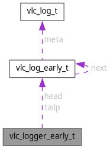

vlc_logger_early_t Struct Reference
Collaboration diagram for vlc_logger_early_t:

Data Fields | |
| vlc_mutex_t | lock |
| vlc_log_early_t * | head |
| vlc_log_early_t ** | tailp |
Field Documentation
◆ head
| vlc_log_early_t* vlc_logger_early_t::head |
Referenced by vlc_LogEarlyClose(), and vlc_LogEarlyOpen().
◆ lock
| vlc_mutex_t vlc_logger_early_t::lock |
Referenced by vlc_LogEarlyClose(), vlc_LogEarlyOpen(), and vlc_vaLogEarly().
◆ tailp
| vlc_log_early_t** vlc_logger_early_t::tailp |
Referenced by vlc_LogEarlyOpen(), and vlc_vaLogEarly().
The documentation for this struct was generated from the following file:
- src/misc/messages.c
Generated by